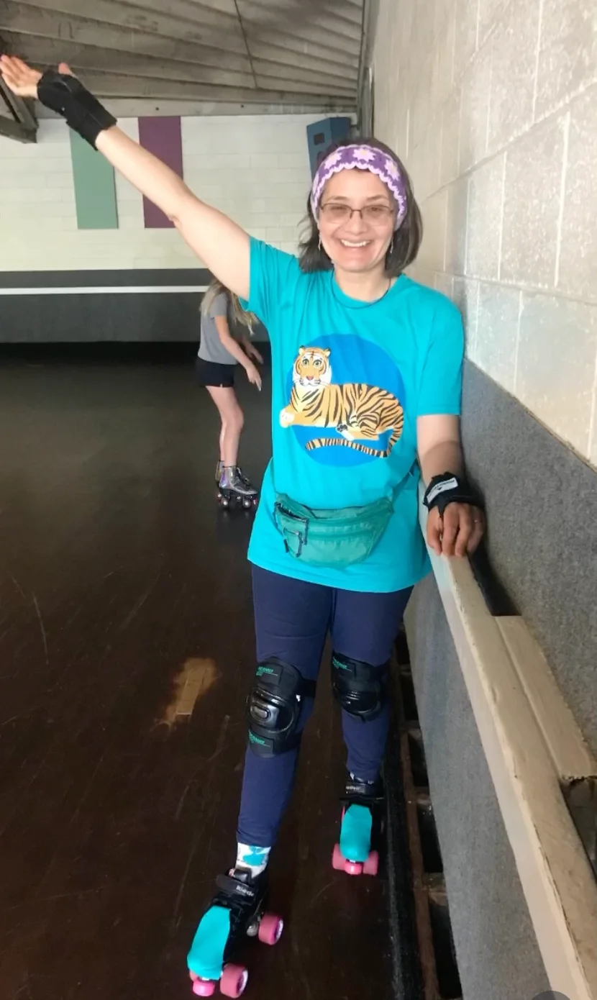

Weaving stories,
thread by thread
For over two decades, I've been sharing the meditative art of basket weaving with students across the Bay Area. Each basket tells a story—of patience, of craft, of hands working in harmony with natural materials.
Whether you're seeking a creative outlet, planning a unique team building experience, or simply drawn to the beauty of handmade objects, basket weaving offers a timeless connection to craft traditions that span cultures and centuries.
"There's something magical about watching cane transform into something both functional and beautiful. It's a practice that grounds you in the present moment."
